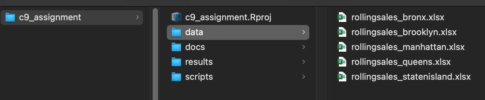

Class 9 Assignment: A Time Series Analysis of NYC Rolling Sales
Fall 2025 | Instructor: Stephen Metts | PGUD 5160 - CRN 2247
Preamble
In this ninth week’s assignment, we will build on the Class 9 Lab exploring the time dimension of data via packages lubridate and forcats.
As we did for assignment 8, we’ll integrate the plotting results as image files (.png) into the Class 9 Assignment .Rmd submission
Follow the steps below: first orient to this week’s materials, then work through this week’s script. Utilize the sections below in the assignment for an overview of the important sections of this week’s time series workflow.
Due Thursday 10/30/25 at 11:59pm.
Week 9 Materials
- Class 9 Agenda
- Class 9 Lecture Slides
- Class 9 lab
- Class 9 Assignment - This Document
- Class 9 Assignment Script #1
- Class 9 Lab Script #1
- Class 9 Assignment .Rmd ‘starter file’
As we have done for past assignments, Create an R Project pointing at your assignment_9 folder with subdirectories: /data, /scripts, /docs, /results. Confirm your working directory with getwd() and list files via list.files(recursive = TRUE) as needed.
Week 9 Assignment Data
Like Lab 9, we will download the starter data, uncompress it and place into the /data directory. Make sure to alter your paths in the assignment scripts as needed.

/data structureNote that we are starting with .xlsx data, which is a typical file type that needs to be cleaned prior to incorporation into tidyverse tibble format.
Week 8 Reading
Next week’s quiz 9 will feature 5 multiple choice questions, and 5 True or False questions on the following online, accessible article:
This week’s assignment cleans, mutates and visualizes the NYC rolling sales data for 2025. This week’s reading contextualizes these sales within the larger affordability conversation happening locally and nationally.
Pay attention to the following concept and themes from the reading:
NYC’s homeownership rate
Home prices and values as related to income.
Racial and ethnic dimensions of home ownership.
The city’s aging housing stock and property tax structure.
At 7am Friday, October 31th, the ninth weekly quiz will open in Canvas. Utilize the posted Class 10 Agenda to gain the quiz access code which will be posted towards the beginning of the agenda. Expect 10 questions in total that cover the reading above.
🧰 Needed Packages and Data
Packages:
tidyverse,readxl,janitor,lubridate,stringr,forcats,ggplot2,scales,tidyrExcel files from NYC DOF Rolling Sales, saved as:
Outputs (by default):
Cleaned tibble(s) in memory:
rolling_sales,rolling_sales_datesPlots printed to the Viewer
Optional PNGs written to:
~/Desktop/c9_assignment/results
🧹 Section 1 — Cleaning & Organization (Excel → tidy tibble)
Goal: Read all five borough workbooks, skip the header junk, standardize column names, and combine all tabs into one tibble with a borough tag.
Keep sale_date as text (not a Date) formatted as MM/DD/YYYY for now.
🧩 Key Ideas
find_header_row()scans for the real header (detects keywords like “sale price”, “zip code”, etc.) and skips the rest.normalize_names()+janitor::clean_names()→ consistent lowercase names.coerce_types()converts number-like columns while leavingsale_datealone.fix_sale_date_text()makes sure Excel date serials become readable"MM/DD/YYYY"text.
🗃️ Main Objects
file_results— per-file cleaned data.precombine_counts— QA check showing rows per borough before combining.rolling_sales— full dataset combined across boroughs.
💡 Why keep
sale_dateas text?
To visually inspect the data before changing types. The real parsing happens later.
📅 Section 2 — Parse Dates with lubridate
Goal: Convert the text sale_date into a proper Date column (sale_date_date) while keeping the original.
🔍 Steps
mutate(sale_date_date = lubridate::mdy(sale_date_chr))- Validate:
- Confirms class = Date
- Reports any
NAs (unparsed)
- Shows min/max date range
- Confirms class = Date
Output: rolling_sales_dates — the cleaned tibble with both text and Date formats.
🧭 Section 3 — Shape Dates with forcats
Goal: Create time-based grouping variables for easier plotting.
⏱️ Adds
week_start— week (Mon-based)month_date— first day of the monthmonth_label— ordered month factor (Jan,Feb, …,Dec)
Object: rs_cat — filtered version with date groupings.
📊 Section 4 — Core Visualizations
🏙️ A) Total Sales by Borough
Bar chart summarizing total transactions per borough.
Uses fct_reorder() to sort from most to least.
📈 B) Weekly Sales Trend
Line chart of weekly totals (Jan 2024 → Aug end of latest year).
Excludes September to avoid the data “cliff.”
Uses complete() to fill gaps (weeks with zero sales).
📆 C) Monthly Patterns
- Overall pattern: bar chart of all months across years (
plot_monthly_overall) - Faceted view: same, but one panel per borough (
plot_monthly_by_boro)
🌟 Tip: Overlay or annotate special events (policy shifts, interest rate changes, etc.) to connect patterns to context.
💰 Section 5 — Rates & Prices (PPSF)
Goal: Filter to valid, plausible sales and compute Price Per Square Foot (PPSF).
🧾 Filters
sale_price > 0gross_square_feet >= 100
💡 Metrics
ppsf = sale_price / gross_square_feet- (Optional)
sqft_per_100_dollars = (100 * gross_square_feet) / sale_price
📉 Visuals
- Median PPSF by Borough → horizontal bar (
plot_ppsf_boro) - Median PPSF by Building Class (Top 15) → ordered by median (
plot_ppsf_cat) - Borough × Tax Class Composition (
plot_tax_stacked)
Stacked proportions:- 🏠
1 = Single, Two, Three Family Homes + Condos ≤ 3 Stories - 🏢
2 = Rentals, Coops, Condos > 3 Stories - 🏭
4 = Commercial and Industrial Real Estate Other= everything else
- 🏠
💾 Optional — Save PNGs
Automatically creates ~/Desktop/c9_assignment/results and exports each plot with clear filenames:
| Plot | Filename |
|---|---|
| Sales by Borough | sales_by_boro.png |
| Weekly Totals | weekly_totals_aug_end.png |
| Monthly Overall | monthly_overall.png |
| Monthly by Borough | monthly_by_borough.png |
| PPSF by Borough | ppsf_by_borough.png |
| PPSF by Category | ppsf_by_category.png |
| Tax Class Stacked | tax_class_stacked.png |
🧩 Add a timestamp easily:
paste0(filename_stub, "_", format(Sys.Date(), "%Y-%m-%d"), ".png")
🧠 Quality Checks & Debugging Tips
- ⚠️ Header not detected?
Add more.anchor_tokens(e.g., “BBL”, “neighborhood”). - 🗓️ Bad date parse?
Review uniquesale_date_chrvalues and adjustfix_sale_date_text(). - 💸 Weird PPSF outliers?
Drop extreme 1% tails or log-transform for smoother visuals. - 📉 Final-week dropoff?
Usually means partial data — safe to clip the time window (we do).
🗂️ Folder Structure & Reproducibility
c9_assignment/
├─ data/
├─ rollingsales_bronx.xlsx
├─ rollingsales_brooklyn.xlsx
├─ rollingsales_manhattan.xlsx
├─ rollingsales_queens.xlsx
└─ rollingsales_statenisland.xlsx🎓 Outcomes
The complete workflow accomplishes: - 🧹 Clean and unify messy multi-sheet Excel data - 🧭 Parse and bucket time using lubridate and forcats - 📊 Summarize data across boroughs, weeks, and months - 💰 Compute price-per-square-foot metrics - 🎨 Create publication-ready visualizations - 💾 Export charts as high-quality PNGs for Assignment 9 .Rmd submission
Part II Deliverables
- Visualization outputs for NYC Rolling Sales over the past year
- Contextual summary of your findings and observations
Use the following prompts to help guide your contextual summary:
- Borough-Level Patterns:
What do the total and median sales plots suggest about the differences between NYC boroughs in housing market activity and price levels? Which boroughs appear most active versus most expensive, and what factors might explain that divergence?
- Temporal Trends:
Looking at the weekly and monthly sales plots, what seasonal or cyclical patterns can you identify? Do certain months or periods show spikes or dips in sales volume, and what might drive those trends (e.g., policy, weather, market behavior)?
- Building Typologies and Value:
From the “Price per Square Foot by Building Class Category” visualization, what does the data reveal about the relative value of different property types in NYC? Which categories appear over- or under-valued, and how might that relate to location, density, or building age?
- Tax Class Composition:
In the stacked tax class proportion plot, how does the composition of sales differ across boroughs? What does this tell us about the mix of residential, rental, and commercial property types in each area?
- Comparative Interpretation and Insight:
Taking all plots together, what larger story emerges about NYC’s real estate market? How might differences in volume, timing, and property characteristics reflect broader social, economic, or spatial patterns across the city?
Submission Notes
- Submit an HTML or PDF produced from your Assignment 9
.qmd(use starter - Class 9 Assignment .Rmd ‘starter file’).
Utilize the Class 9 Assignment .Rmd ‘starter file’ for the development of your write-up and static plots.
Timeline & Deliverables
- Due: (October 30th, 2025 - 11:59pm )
- Deliverables: rendered
.htmlor.pdf; hold onto your.qmdin the project folder (do not remove after rendering).